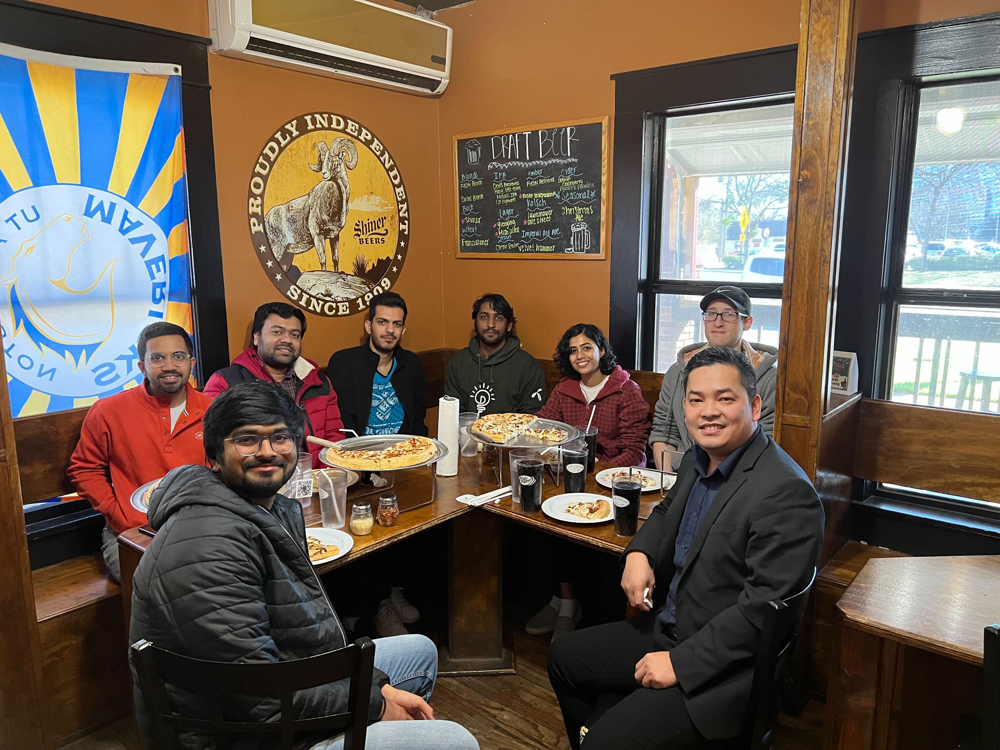
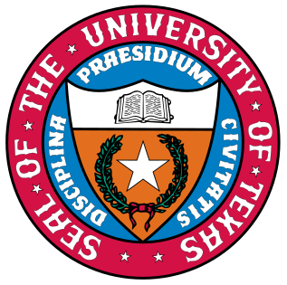
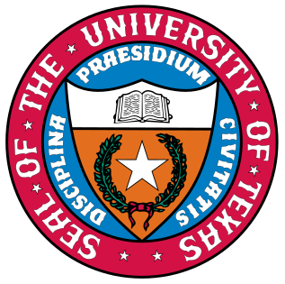

-

WSSL (pronounced "Whistle") is a research lab at UMass Amhest exploring novel wireless,
mobile and wearable systems for healthcare and environmental monitoring. -
WSSL (pronounced "Whistle") is a research lab at the UMass Amhest exploring novel wireless,
mobile and wearable systems for healthcare and environmental monitoring. -
WSSL (pronounced "Whistle") is a research lab at the UMass Amhest exploring novel wireless,
mobile and wearable systems for healthcare and environmental monitoring. -
 WSSL (pronounced "Whistle") is a research lab at the University of Texas at Arlington exploring novel wireless,
WSSL (pronounced "Whistle") is a research lab at the University of Texas at Arlington exploring novel wireless,
mobile and wearable systems for healthcare and environmental monitoring.
Our research interests and topics include:
Internet of Medical Things
Internet of Living Things
Internet of Flying Things
Quantum Computing
Lab News
- 09 - 2024: Unvoiced paper is accepted to ACM Sensys 2024 (Acceptance Ratio ~18.5%). Congratulations, team!
- 09 - 2024: Our work on building an open-source platform for real-time qubit data storage and visualization is accepted to Nature Scientific Reports. Congratulations, team!
- 09 - 2024: Paper on 3D facial annimation for authentication is accepted to IEEE Trans. on Mobile Computing. Congratulations, team!
- 07 - 2024: We lead an NSF CSR award focused on developing implantable and wearable sensors for plant health monitoring.
- 06 - 2024: We have released a pre-print summarizing our two years of work on building an open-source ML-powered FPGA hardware/software platform for in situ qubit control. We will discuss it at Quantum Week (QCE) 2024. More to come soon!
- 06 - 2024: Welcome Joseph Vo, Tanvi Kandepuneni, Michael Knox, Joseph Collins, Patrick Do, Gaurav Chandra, Aryan Nair, and Yuqi Liu to the Summer Research Program at WSSL!
- 05 - 2024: Our dear members, Neel Vora and Devanshu Brahmbhatt, graduated. Neel joined Berkeley Lab as a research staff. Devanshu continues his start-up dream. Congratulations!
- 03 - 2024: Our collaborative a2 pilot study with Neursantys is funded by National Institute on Aging via MassAITC .
- 02 - 2024: Prof. Nguyen gives an invited talk at University of Toronto - Dalla Lana School of Public Health
- 01 - 2024: IOTeeth is accepted ACM IMWUT/UbiComp 2024 . Congratulations, Amir!
- 01 - 2024: Our paper is accepted to Journal of Clinical Neurophysiology . Congratulations, Aziz!
- 01 - 2024: Prof. Nguyen gives an invited talk at ICOIN 2024 .
- 12 - 2023: Prof. Nguyen gives an invited talk at Lawrence Berkeley National Laboratory on ML + FPGA-based research and visit UCB .
- 11 - 2023: Prof. Nguyen gives an invited talk at UMass Chan Medical on earable health.
- 10 - 2023: Two papers are accepted to ACM SenSys 2023 (Acceptance Ratio ~18.9%). Congratulations, teams!
- 10 - 2023: Prof. Nguyen gives an invited talk at The Morton Arboretum on the future of Internet of Trees.
- 09 - 2023: Two papers are accepted to ACM SenSys 2023 (Acceptance Ratio ~18.9%).Congratulations, teams!
- 09 - 2023: Congratulations Neel Vora for getting an Internship offer from Lawrence Berkeley National Lab. He will be in CA for Fall 2023. Cheers!
- 08 - 2023: Congratulations Abdul Aziz for acceptance of Paper at ACM EarComp 2023 in association with UbiComp/IMWUT 2023.
- 08 - 2023: Congratulations Jackson Liller for acceptance of Article at GetMobile journal.
- 07 - 2023: Congratulations team for acceptance of paper at Cancers journal.
- 06 - 2023: Congratulations team for acceptance of paper Exploring Batteryless UAVs by Mimicking Bird Flight at ACM DroNet'23
- 06 - 2023: Congratulations Neel R Vora for acceptance of paper DroneChase at ACM DroNet'23
- 06 - 2023: Congratulations Tasnim Azad Abir for acceptance of paper Towards Robust Lidar-based 3D Detection and Tracking of UAVs at ACM DroNet'23
- 03 - 2023: Congratulations Devanshu Brahmbhatt for getting an Internship offer from Lawrence Berkeley National Lab. He will be in CA for Summer 2023. Cheers!
- 01 - 2023: Jackson Spray joins Lockheed Martin as a Research Scientist. Congratulations, JD!
- 09 - 2022: Our research is funded by NSF ECCS . Thanks NSF for the support!
- 08 - 2022: We are running Tutorial on Earable Computing at ACM MobiCom 2022 . Please join us in Sydney!
- 07 - 2022: MuteIt is accepted to ACM UbiComp/IMUWT 2022 . Congratulations, team!
- 06 - 2022: Two papers (IoTree and PROS) are accepted to ACM MobiCom 2022 (Acceptance Ratio ~17.8%). Congratulations, teams!
- 06 - 2022: Our workshop paper and demo are accepted to MobiSys 2022 .
- 05 - 2022: Our poster at IPSN 2022 wins Best Poster Award. Congratulations, team!!!
- 04 - 2022: Our MobiCom paper is awarded ACM SIGMOBILE Research Highlights 2022 . Congratulations, team!!!
- 04 - 2022: UCM covers our collaborative research on Dental Health . Visit our demo at IPSN 2022 , CPS-IoT Week 2022 .
- 03 - 2022: One poster and one demo are accepted to IPSN 2022 .
- 01 - 2022: UTA covers our Epileptic Seizure Research with UT Southwestern and Oxford.
- 10 - 2021: UTA covers our recent NSF Award: Building a Better VR Headset .
- 09 - 2021: Our paper is accepted to IEEE/ACM CHASE 2021 .
- 08 - 2021: Our project is funded by NSF ECCS . Thanks, NSF, for the support!
- 07 - 2021: We are extremely grateful to receive a set of Jetson Nano Developer Kits from NVIDIA Grant Program .
- 07 - 2021: Our COVID 19-related paper is accepted to UbiComp (IMWUT) 2021 . Congratulations, team
- 06 - 2021: Prof. Nguyen received SONY Faculty Innovation Award . Thanks, SONY, for the support!
- 06 - 2021: Our paper is conditionally accepted to ACM MobiCom 2021.
- 05 - 2021: Our microsleep (sleepiness) detection work is accepted to IEEE Transactions on Mobile Computing .
- 03 - 2021: Hosting ACM DroNet 2021 at MobiSys 2021 . Please consider submitting your papers!
- 02 - 2021: Prof. Nguyen receives University of Texas System Rising Stars Award.
- 12 - 2020: JawSense paper is accepted to ACM HotMobile 2021 . Congratulations, Tanmay and Prerna !
- 12 - 2020: Prof. Nguyen is invited to serve in TPC of ACM MobiSys 2021 .
- 11 - 2020: Prof. Nguyen serves in Panelists of ACM SenSys/BuildSys PhD Forum 2020 .
- 11 - 2020: UNDERGRADUATE RESEARCH SCHOLAR POSITIONS ARE AVAILABLE
- 10 - 2020: eBP is selected for publication in CACM Research Highlights 2020 .
- 10 - 2020: Profs. VP Nguyen and Shijia Pan published a positioning paper on wearable-infrastructure collaborative sensing at ACM BuildSys-DFHS 2020 .
- 09 - 2020: DroneScale paper is accepted to ACM SenSys 2020 . Congratulations, Vimal!
- I am looking for self-motivated students to work on research projects in mobile and wearable computing. Check my " Notes to Prospective Students " if you are interested in joining my lab.
- 05 - 2020 - Lab website is online
Active Projects (will be updated soon)
PROS: an Efficient Pattern-Driven Compressive Sensing Framework for Low-Power Biopotential-based Wearables with
On-chip Intelligence
ACM MobiCom 2022
.
Nhat Pham, Hong Jia, Minh Tran, Tuan Dinh, Nam Bui, Young Kwon, Dong Ma, Phuc Nguyen, Cecilia Mascolo, and Tam Vu
Abstract
This study proposes PROS, an efficient pattern-driven compressive sensing framework for low-power biopotential-based wearables. PROS eliminates the conventional trade-off between signal quality, response time, and power consumption by introducing tiny pattern recognition primitives and a pattern-driven compressive sensing technique that exploits the sparsity of biosignals. Specifically, we (i) develop tiny machine learning models to eliminate irrelevant biosignal patterns, (ii) efficiently perform compressive sampling of relevant biosignals with appropriate sparse wavelet domains, and (iii) optimize hardware and OS operations to push processing efficiency. PROS also provides an abstraction layer, so the application only needs to care about detected relevant biosignal patterns without knowing the optimizations underneath..
IoTree: A Battery-free Wearable System with Biocompatible Sensors for Continuous Tree Health Monitoring
ACM MobiCom 2022
.
Tuan Dang, Trung Tran, Khang Nguyen, Tien Pham, Nhat Pham, Tam Vu, and Phuc Nguyen
Abstract
We present a low-maintenance, wind-powered, batteryfree, biocompatible, tree wearable, and intelligent sensing system, namely IoTree, to monitor water and nutrient levels inside a living tree. IoTree system includes tiny-size, biocompatible, and implantable sensors that continuously measure the impedance variations inside the living tree’s xylem, where water and nutrients are transported from the root to the upper parts. The collected data are then compressed and transmitted to a base station located at up to 1.8 kilometers (approximately 1.1 miles) away. The entire IoTree system is powered by wind energy and controlled by an adaptive computing technique called block-based intermittent computing, ensuring the forward progress and data consistency under intermittent power and allowing the firmware to execute with the most optimal memory and energy usage. We prototype IoTree that opportunistically performs sensing, data compression, and long-range communication tasks without batteries. During in-lab experiments, IoTree also obtains the accuracy of 91.08% and 90.51% in measuring 10 levels of nutrients, 𝑁𝐻3 and 𝐾2𝑂, respectively. While tested with Burkwood Viburnum and White Bird trees in the indoor environment, IoTree data strongly correlated with multiple watering and fertilizing events. We also deployed IoTree on a grapevine farm for 30 days, and the system is able to provide sufficient measurements every day.
MuteIt: Jaw Motion based Unvoiced Command Recognition using Earable
ACM UbiComp/IMWUT 2022
.
Tanmay Srivastava, Prerna Khanna, Shijia Pan, Phuc Nguyen, Shubham Jain
Abstract
we present MuteIt, an ear-worn system for recognizing unvoiced human commands. MuteIt presents an intuitive alternative to voice-based interactions that can be unreliable in noisy environments, disruptive to those around us, and compromise our privacy. We propose a twin-IMU set up to track the user's jaw motion and cancel motion artifacts caused by head and body movements. MuteIt processes jaw motion during word articulation to break each word signal into its constituent syllables, and further each syllable into phonemes (vowels, visemes, and plosives). Recognizing unvoiced commands by only tracking jaw motion is challenging. As a secondary articulator, jaw motion is not distinctive enough for unvoiced speech recognition. MuteIt combines IMU data with the anatomy of jaw movement as well as principles from linguistics, to model the task of word recognition as an estimation problem. Rather than employing machine learning to train a word classifier, we reconstruct each word as a sequence of phonemes using a bi-directional particle filter, enabling the system to be easily scaled to a large set of words.
FaceSense: Sensing Face Touch with an Ear-worn System
ACM MobiCom 2021
.
Vimal Kakaraparthi, Qijia Shao, Charles J. Carver, Tien Pham, Nam Bui, Phuc Nguyen, Xia Zhou, Tam Vu
Abstract
Face touch is an unconscious human habit. Frequent touching of sensitive/mucosal facial zones (eyes, nose, and mouth) increases health risks by passing pathogens into the body and spreading diseases. Furthermore, accurate monitoring of face touch is critical for behavioral intervention. Existing monitoring systems only capture objects approaching the face, rather than detecting actual touches. As such, these systems are prone to false positives upon hand or object movement in proximity to one’s face (e.g., picking up a phone). We present FaceSense, an ear-worn system capable of identifying actual touches and differentiating them between sensitive/mucosal areas from other facial areas. Following a multimodal approach, FaceSense integrates low-resolution thermal images and physiological signals. Thermal sensors sense the thermal infrared signal emitted by an approaching hand, while physiological sensors monitor impedance changes caused by skin deformation during a touch. Processed thermal and physiological signals are fed into a deep learning model (TouchNet) to detect touches and identify the facial zone of the touch.

BioFace-3D: Continuous 3D Facial Rconstruction Through Lightweight Single-ear Biosensors
ACM MobiCom 2021
.
Yi Wu, Vimal Kakaraparthi, Zhuohang Li, Tien Pham, Jian Liu, Phuc Nguyen
Abstract
We propose the first single-earpiece lightweight biosensing system, BioFace3D, that can unobtrusively, continuously, and reliably sense the entire facial movements, track 2D facial landmarks, and further render 3D facial animations. Our single-earpiece biosensing system takes advantage of the cross-modal transfer learning model to transfer the knowledge embodied in a high-grade visual facial landmark detection model to the low-grade biosignal domain. After training, our BioFace-3D can directly perform continuous 3D facial reconstruction from the biosignals, without any visual input. Without requiring a camera positioned in front of the user, this paradigm shift from visual sensing to biosensing would introduce new opportunities in many emerging mobile and IoT applications.

DroneScale: drone load estimation via remote passive RF sensing
ACM MobiCom 2021
.
Phuc Nguyen, Vimal Kakaraparthi, Nam Bui, Nikshep Umamahesh, Nhat Pham, Hoang Truong, Yeswanth Guddeti, Dinesh Bharadia,
Richard Han, Eric Frew, Daniel Massey, and Tam Vu
Abstract
Drones have carried weapons, drugs, explosives and illegal packages in the recent past, raising strong concerns from public authorities. While existing drone monitoring systems only focus on detecting drone presence, localizing or !ngerprinting the drone, there is a lack of a solution for estimating the additional load carried by a drone. In this paper, we present a novel passive RF system, namely DroneScale, to monitor the wireless signals transmitted by commercial drones and then con!rm their models and loads. Our key technical contribution is a proposed technique to passively capture vibration at high resolution (i.e., 1Hz vibration) from afar, which was not possible before. We prototype DroneScale using COTS RF components and illustrate that it can monitor the body vibration of a drone at the targeted resolution. In addition, we develop learning algorithms to extract the physical vibration of the drone from the transmitted signal to infer the model of a drone and the load carried by it. We evaluate the DroneScale system using 5 di"erent drone models, which carry external loads of up to 400g..

Painometry: Wearable and Objective Quantification System for Acute Postoperative Pain
ACM MobiSys 2020
(34 out of 175 submissions, acceptance ratio: 19.4%).
H. Truong, N. Bui, Z. Raghebi, M. Ceko, N. Pham, P. Nguyen, A. Nguyen, T. Kim, K. Siegfried, E. Stene, T. Tvrdy, L.
Weinman, T. Payne, D. Burke, T. Dinh, S. D’Mello, F. Banaei-Kashani, T. Wager, P. Goldstein, and T. Vu
Abstract
This paper explores a wearable system, named Painometry, which objectively quanti!es users’ pain perception based-on multiple physiological signals and facial expressions of pain. We propose a sensing technique, called sweep impedance pro!ling (SIP), to capture the movement of the facial muscle corrugator supercilii, one of the important physiological expressions of pain. We deploy SIP together with other biosignals, including electroencephalography (EEG), photoplethysmogram (PPG), and galvanic skin response (GSR) for pain quanti!cation
WAKE: A Behind-the-ear Wearable System for Microsleep Detection
ACM MobiSys 2020
(34 out of 175 submissions, acceptance ratio: 19.4%).
N. Pham, T. Dinh, Z. Raghebi, T. Kim, N. Bui, P. Nguyen, H. Truong, F. Banaei-Kashani, A. Halbower, T. Dinh, and T. Vu
Abstract
We propose a novel behind-the-ear wearable device for microsleep detection, called WAKE. WAKE detects microsleep by monitoring biosignals from the brain, eye movements, facial muscle contractions, and sweat gland activities from behind the user’s ears. In particular, we introduce a Three-fold Cascaded Amplifying (3CA) technique to tame the motion artifacts and environmental noises for capturing high fidelity signals. The behind-the-ear form factor is motivated by the fact that bone-conductance headphones, which are worn around the ear, are becoming widely used. This technology trend gives us an opportunity to enable a wide range of cognitive monitoring and improvement applications by integrating more sensing and actuating functionality into the ear-phone, making it a smarter one.
Please check our Publications page for projects before 2020
Sponsors


 
